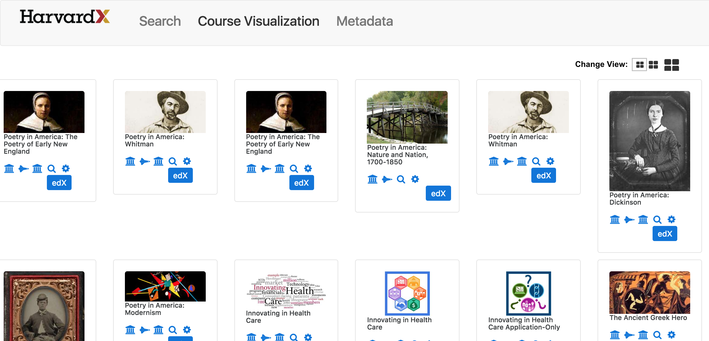

Overview
Patterns originated as an architectural concept by Christopher Alexander. Patterns are ways to describe best practices, explain good designs, both from a programmatic and visual standpoint, and capture experience so that other people can reuse these solutions.
Interaction design patterns are a way to describe solutions to common usability or accessibility problems in a specific context. They document interaction models that make it easier for users to understand an interface and accomplish their tasks.
While guidelines are generally more useful for describing requirements whereas patterns are useful tools for those who need to translate requirements to specific software solutions.
Guidelines and patterns are not necessarily conflicting, and both can be used in conjunction to identify the problem and then create a valid solution.
Benefits of using interaction design patterns include:
- Capturing collective wisdom across many uses and scenarios
- Giving teams a common language, reducing misunderstandings that arise from different vocabulary
- Reducing time and costs in the design and development life cycle
- Making usable designs the "path of least resistance "
- Eliminate wasted time spent "reinventing the wheel"
- Ensuring users have a consistent and predictable experience within an application or service
Reference (): Wikipedia
This release of VPAL Search has been reviewed to address Harvard branding, to employ consistent and familiar conventions (such as buttons, breadcrumbs, etc.) and to offer an efficient user experience an intuitive interface.
A few of the following recommendations may have already be addressed by the time this document was published.
The images of the proposed recommendations are not meant to represent specific visual specifications; they are just depictions of suggested alternatives.
Reference (): August 19 2016 release
User Flow
The path of least resistance is used to describe certain human behaviors. In these cases, resistance is often used as a metaphor for personal effort or confrontation; a person taking the path of least resistance avoids these .
Ultimately, people want information/content provided to them as quickly and simply as possible .
In the context of software or information modeling, a happy path is a default scenario featuring no exceptional or error conditions, and comprises the sequence of activities executed if everything goes as expected.
There may be any number of additional alternate path scenarios which are all valid optional outcomes. If valid alternatives exist, the happy path is then identified as the default or most likely positive alternative .
Information Architecture
The purpose of your IA is to help users understand where they are, what they’ve found, what’s around, and what to expect .
These flows help to clarify ways to improve the user interaction with the interface.
Although still work in progress, the current flow should allow efficient ways to perform tasks, and to access the different aspects of course information from any point.
For instance, no search should be initiated until there is a value in search the input form.
If course visualization and metadata is available for each course, a direct link to this information should be made available.
Avoiding redundant links would also eliminate confusion. If the home page offers a clear way to conduct a search, the additional search link below this interface and the one on the top navigation are not longer necessary.
The proposed flow shown below illustrates a few of these issues. More detailed recommendations are presented in the sections below.
Current information architecture as in August 26, 2016
View full size image on another browser tab
View Google document
Proposed information architecture. Users should be able to access any other interface, especially if within the same contest. For instance, from course search results to Course Visualization, from the search result of a specific course, to its specific Course Visualization.
View full size image on another browser tab
View Google document
Foundation
Branding
Within this section, recommendations often refer to the interface of the VPAL web site. The interface is only chosen as an example. Alternatives can of course be considered, especially if offer a more efficient user experience.
Harvard and HarvardX branding
Harvard and HarvardX branding should be present throughout the interface.
Consistency with the VPAL web site , as well as a prominent presence of its logo, should also be considered.
Current landing page
Proposed landing page with Harvard, HarvardX and VPAL branding.
Layout consistency
Consistency with the VPAL web site , would still allow flexibility and character, while promoting consistency.
Lower menu of current landing page
Lower menu of proposed landing page with a layout similar to the VPAL website.
Color from Harvard palette
It is always beneficial to refer to the color palette of the Harvard Style Guidelines and Best Practices , since, together with the Harvard logo, helps to strengthen the Harvard branding by providing additional opportunities for consistency.
In the proposed landing page depicted below, colors where switched to match similar values listed in the Harvard style guide.
Current landing page
Proposed landing page with suggestion of colors from the Harvard style guide. 8C8179 for the search box, 4E84C4 for the lower menu.
Elements consistency
Use the same footer as in most Harvard web sites and tools.
Footer of current interface
Footer of proposed interface, consistent with most Harvard sites and tools. It also takes less vertical space.
Use explicit buttons and same navigation elements throughout the interface.
Upper navigation of current interface.
Upper navigation of proposed interface, with similar "Search" button as on the home page, and upper navigation and Harvard branding consistent throughout the interface.
Navigation
Upper Tabs
Use consistent upper tabs across the interface. Use them to both highlight the current interface and to allow navigation to any other interface. Tabs should not be hyperlinks when they highlight the current page.
Current home page, search results and Course Visualization.
Proposed consistent upper navigation throughout the interface.
Links to related content area
If there is equivalent Course Visualization and Metadata content per course, provide links to that information so that users can look at all the information related to the objective of the search.
Current course with the alternatives to either preview or go to the course site.
Proposed course with Bootstrap class btn-xs links to the available related content.
Change the icon for the Preview button link from fa-caret-down to fa-caret-up and the class of the button link from btn-default to btn-primary when this button link is selected, to highlight this functionality in case the expanded preview content is below the scrolling area.
Familiar Conventions and Patterns
Search Button and Criteria
Avoid to take users to a search result page with 0 results by disabling the Search button until values are typed in input form.
Increase visibility of the disabled state by eliminating the transparency of the search panel with opacity: 1.
Add a margin-top:1em to the Search button to allow space between the button and the above input form.
Provide hints or specific search criteria to the search_query input form via a placeholder to avoid searches with unexpected results.
Similar to the enabled search button, allow for the keyboard Return key to submit a search.
Current home page search interface interface.
Proposed home page search interface interface, with disabled Search button until values are typed in input form, and search information.
Consistency of Terms
Use natural language and non-technical terms as much as possible. Use terms referring to search results consistently throughout.
Current search result page with highlighted inconsistent terms.
Proposed search result page with consistent terminology.
Hidden functionality
Although the columns headers of the search result table allow for sorting, this functionality is not visible, even when the cursor hovers the table headers.
Clearly indicate the presence and functionality of active elements.
Current table headers with text selection cursor.
Proposed table headers as active areas (cursor changes into an hand) and sorting icon.
Home Page
Technology Information
Clearly distinguish plain information from active links. Unless Technology is meant to be an content area similar to Search, Course Visualization and Metadata, place this information near the context it is related to.
Current home page with technology information next to links of content areas.
Proposed location of technology information, where it complements the functionality of this search product.
Search Results Page
The search result page is clearly the primary entry way into this interface. Ideally it would allow access to any other content related to search results, allowing the user to efficiently find the content of interest, define its context, and access any related information.
The proposed recommendations presented in this and the other sections address individual usability issues, although the goal is to combine all the appropriate and feasible improvements and enhancements.
Content Type
Use consistent terminology.
Current table headers of search results.
Proposed table headers of search results, descriptive of content type.
Elements
Use the list display drop down and filter throughout the interface.
Current use of drop down and filter only on Videos search results.

Proposed use of drop down and filter on all search results.
Grid View
Similar to Google Drive and other familiar interfaces, consider a grid view as an alternative to the list view for scanning search results.
Make any link or button look like a link or a button on all instances.
Consistent Navigation
If both list and grid view are available, retain the same interface as much as possible.
Current list view of search results.
Proposed card view of search results
Streamline Card Information
Employ the familiar Bootstrap conventions, such as classes for button states , to clearly convey both information and ways to access it (e.g.: an active link labeled as info to access HarvardX information, or a disabled link labeled as warning for an unavailable Resource count).
Current card view of search results.
Proposed card view of search results using a streamlined layout to allow the view of a greater number of cards prior of scrolling. Consider using Bootstrap class label for a more concise display of information.
Refer to this GitHub commit to compare current and proposed user interface code. Follow "UI Comment" comments.
Group every row of cards in a div with a row class to avoid the display of rows with only one card .
Filter and Change Views
Consistent to the list view, allow the user to filter this content, but also to switch between these two views, similar to the display options of Google Drive .
Current list view of search results.
Current list view of search results with a grid/list button to switch between grid and table view.
Current card view of search results.
Current card view of search results with a grid/list button to switch between grid and table view.
Navigation Options
Consider other means of navigating through large amount of information, similar to the navigation features of a map , "zooming out" allows to see more information, "zooming in" helps to focus on details.
Current card view of search results.
Proposed card view of search results using a zoom in/out interface similar to maps. This image shows the "medium" zoomed out view.
Proposed card view of search results using a zoom in/out interface similar to maps. This image shows the "small" zoomed out view.
Top Search Matches
The top search matches represent search items whose content has the highest number of instances matching the submitted search term.
Placement and content
(This diagram is not a representation of the interface design.)
Each of these top search matches, should display
- the item image
- the item name
- type (video, problem or HTML page)
- a link to view course description
- a link to preview this content
- a link to add this content to the currently logged in Canvas course.
Image of this Google Draw document.
Display criteria
(This diagram is not a representation of the interface design.)
- All top items could represent course material of the very same course.
- All top items could be of the same type (all videos).
- 4 top items will be displayed when the search result yields 4 or more search items.
- If only 4 or less search items can be produced as a search result, there will be 4 or less top cards and 4 or less search items below.
- 4 top items will be displayed independently from the filter selection of the search results.
Image of this Google Draw document.
Course Browse
Course Browse should allow to filter by topic, course launch, and just in general, show more information about what users are looking at.
Other Search Interfaces
EdX
EdX uses three approaches to narrow down a search.
Alternative 1, search from the home page.
Screen capture of edX home page.
Alternative 1 wireframe of the user flow.
Image from this Google Draw document.
Alternative 2, search from the right hand menu.
Screen capture of all edX courses.
Screen capture of all edX Communication courses.
Alternative 2 wireframe of the user flow.
Image from this Google Draw document.
Alternative 3, search from the search form.
Screen capture of search result page.
Alternative 3 wireframe of the user flow.
Image from this Google Draw document.
Canvas
Canvas Find Course LTI tool allows to define the searching criteria at the beginning of the search flow.
Find Course LTI tool.
Screen capture of the Find Course LTI tool.
Screen capture of the search results of the Find Course LTI tool.
Find Course LTI tool wireframes of the user flow.
Image from this Google Draw document.
Add to Canvas
At this time, this epic is at its infancy, especially in regard to the user interface.
User Flow
Here is a user flow that illustrates the user interface aspect of Phil's introduction to implementing OAuth API token negotiation protocol.
Link to Google Draw document.
Image of this Google Draw document.
Design Concepts
Let's use this section as a repository of ideas, concepts and the outcome of team brainstorming.
Most of the following depictions are constructed by manipulating the existing code, so hopefully they are not far from a realistic implementation.
Occasionally, GitHub commits with both before/after screen captures and UI code instances will be available.
The most unrealistic concepts are surely out of Vittorio's head, as he primarily focuses on the user experience and, by choice, design or lack of technical knowledge, disregards other aspects of the product.
Although seemingly unrealistic, this approach helps to find creative opportunities and optimal solutions.
Team involvement provides the greatest contribution, though, by helping with the assessment of realistic and long term implementations, distinguishing immediate from backlog ideas, and exploring the potential of long term solutions.
In most cases, although team consensus is important, user testing and validation will provide the most accurate confirmation of the usability of an interface.
Top Search Matches
Here is a concept aimed to allow the user to immediately learn how many matches are in a "top card", which category of matches (video, problem, HTML) and the number of matches per category.
This design is based on the assumption that a single course may contain several types of content, such as HTML pages, and video, and problems.
For design consistency, the top cards are depicted as similar to the cards in the search results card view, to ensure the user that both cards access the same type of information.
Top Search Banner
These three design alternatives allow the user to access course and search results information without leaving this page.
The focus of this design is in the color banner below the course image.
In all of these instances, each icon would link to the search result page with that category. Basically using the same link of the links below (e.g.: video (8) or problems (10), etc.)
With the risk of overstating the obvious, users shall help us to define the most comprehensive icons and whether this functionality is useful.
For every link, for both the information icon () and the search category icons (, and ) Bootstrap enhanced tooltip will help first time users to understand and learn the function and the target of each link.
Here is the code for these examples: findability/ui_vittorio/UX_Design/Card_top_UI
This card design shows (1) an icon for viewing the course information via a Bootstrap popover , (2) a summary of search matches for this course, and (3) icons that indicate which categories these searches belong to.
This card shows a scenario in which the search matches only belong to two of the three categories, so only these icons are shown. These icons could be links to the Video, Problems and HTML search results.
In this design the text with the total search matches (21 matches!) is a link that allows to view more details about these search matches via a Bootstrap dropdown .
This card illustrates a concept of "color temperature", in which each search category icon indicates by the opacity of its color the number of searches that fall in its category; full opacity (the brightest) for the category with the greatest number of search matches for this course, least opacity for the smallest number of search matches.
Search Results
Examining the interface of Google search results helps to appreciate the extensive user testing they have conducted to reach such a streamlined solution.
I documented here also Daniel’s most recent design considerations.
All these images are scaled to fit this page. Select an image to open in full scale on a new browser tab.
Google Interface and REACH Work in Progress
Google-like Search Results in the Context of HarvardX REACH.
Here I just swapped and edited the text strings and links of the Google interface as I adapted this design to HarvardX REACH.
This intent is not to copy Google, rather to trigger ideas and to explore which interface elements are most usable and adoptable.
Google-like Search Results Design
In this design the subtle use of colors allows the user to distinguish the 3 types of search results (video, problems and HTML pages) just by looking at colors, and prior of reading the information.
The colors are used on the image thumbnails, content name and also on the highlights of the nav bar.
Here is the code for these examples: findability/ui_vittorio/UX_Design/Search_Results_Google_Like_UI
Search results of All content types.
Search results of video content types.
Search results of problems content types.
Search results of HTML pages content types.
Course Browse
Examining the interface for course filtering in EdX View all Courses and comparing it with a different, non-liner approach to be considered for Course Browse.
Wire frames
EdX filtering model follows a linear selection process of single choices.
HarvardX allows for combinations of selections.
Image of this Google Draw document.
EdX linear filter selection flow

EdX second filter selection - Self-Paced.
HarvardX interactive filter selection flow

HarvardX View all Courses page.
Other examples of filter selection flow.
The Harvard Business Publishing for Educators website has a sophisticated search and filtering system with search criteria "breadcrumbs" similar to EdX but with a more responsive and streamlined interface.
Once logged in, all the search items have a checkbox, which allows selected items to be stored in the Library area.
Harvard Business Publishing for Educators home page and category drop down menu.
Harvard Business Publishing for Educators. Search by category "Finance" and term "behavioral".
The Harvard Library offers additional guidance and links on the home page, as well as drop downs with searching criteria.
Harvard Library Hollis home page and category drop down menu.
Harvard Library Hollis. Search by terms "Finance" and "behavioral".
CSS Structure
Home Page
-
Background image -
body -
Upper nav - Bootstrap
-
HarvardDART logo -
#NavLogoBlack
-
HarvardDART logo -
-
Spacing -
.u-margin-lg -
HarvardDART sizing -
.HomeLogo -
Spacing -
.u-margin-md -
Search form -
.HomeSearch -
Spacing -
.u-margin-md -
Credits panel -
.HomeCreditsPanel-
Credits -
.HomeCredits
-
Credits -
-
Footer
-
html-
body-
.footer-
.container
-
-
-
-
This CSS structure was used on this commit .
Course Card
Course Browse
-
Outer panel
-
Bootstrap
-
panel -
panel-default
-
-
Modifier
-
panel--shadow
-
-
Course image
-
Extension
-
panel-heading_img
-
-
Extension
-
Course banner
-
Bootstrap
-
list-group
-
-
Extension
-
list-group-item__banner
-
-
Bootstrap
-
Course information
-
Bootstrap
-
list-group-item
-
-
Bootstrap
-
Bootstrap
This CSS structure was used on this commit .
Search Results
-
Outer panel
-
Bootstrap
-
panel -
panel-default
-
-
Modifier
-
panel--shadow
-
-
Search Results
-
Extension
-
panel-heading__imgResults
-
-
Extension
-
Course information
-
Bootstrap
-
list-group-item
-
-
Bootstrap
-
Bootstrap
This CSS structure was used on this commit .
Glossary
Although not official (yet), and definitely not accurate, I'll start collecting here the general nomenclature of the features we are working on, for the primary purpose to avoid ambiguities and hopefully contribute to a clearer information architecture .
| Term | Interface | Explanation |
|---|---|---|
| Top search matches | Search Results | The list of the 4 or less courses that match the higher number of search results. |
| Top search features | Search Results | The links, drop down or icons that populate a top search match. |
| Top Search Banner | Search Results | (If this design flies) the color banner below the image of a top search match |
| Card thumbnail | Search Results | Image of either video, problem or HTML page, that is displayed in a list view of a search result page |
| CSS Components | CSS styles | The small building blocks that get used to assemble a website or app. Like buttons, inputs, navs, headers etc. |
Contextual Styling
Similar to the importance of a well defined architecture...
Employing the very same coding principles ensure more efficient team work and communication. I found this article very beneficial: HTML/CSS code style best practices by Richard Hallows
References
Nomenclature and style structure
Contextual Styling by simurai
Various strategies for contextual styling in CSS.
Extending Styles by Philip Walton
Modifying a component means you change its style definition — its properties and values. Extending a component, by contrast, means you take an existing component and build on top of it. You do not change the definition of the existing component; instead, you create a new component that includes the original styles and adds new styles (or overrides) on top of them.
Side Effects in CSS by Philip Walton
There are two types of problems in CSS: cosmetic problems and architectural problems.
Conventions
SUIT CSS naming conventions by Ben Zörb
SUIT CSS relies on structured class names and meaningful hyphens.
BEM by Robin Rendle
The Block, Element, Modifier methodology (commonly referred to as BEM) is a popular naming convention for classes in HTML and CSS.